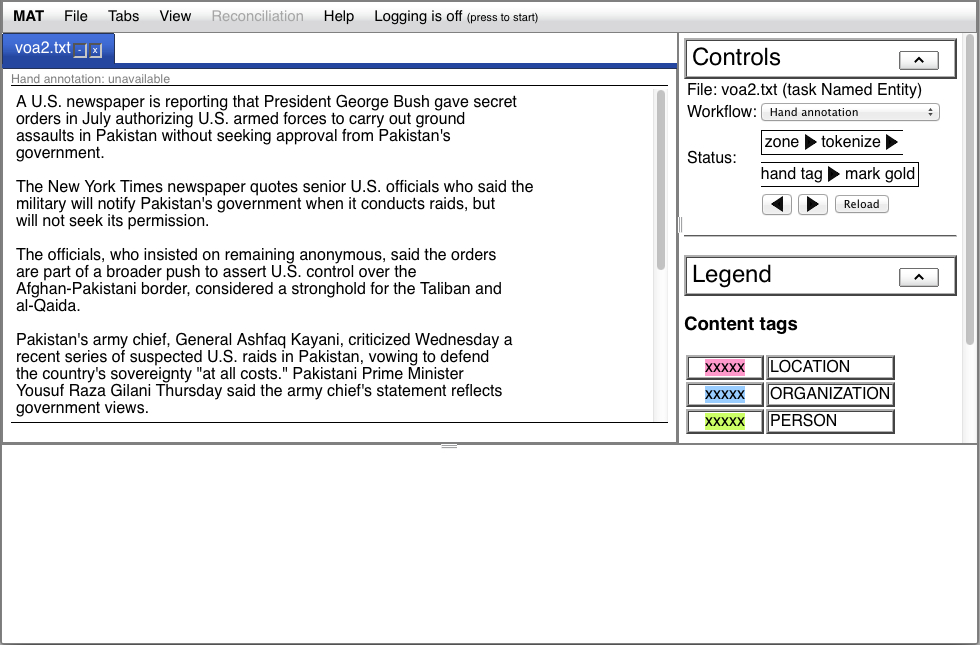
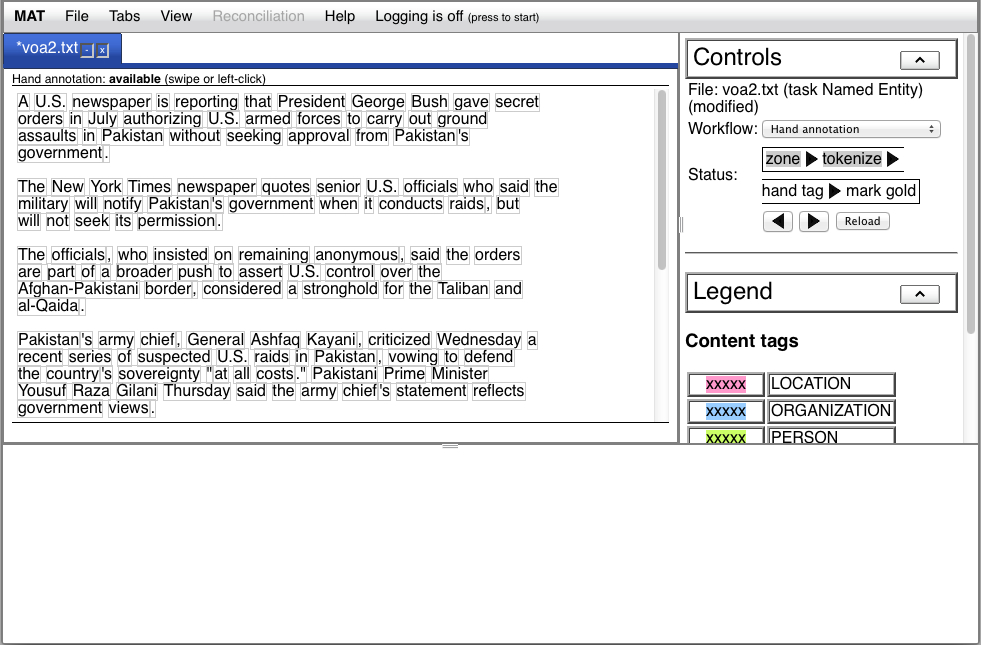

![[raw plus menu]](../img/voa2_ha_raw_menu.jpg)
The Web UI that comes with MAT is a rich, logging-enabled tool
for viewing, processing and annotating your documents. We describe
how to use it here.
We assume that you've started the Web
server and the UI.
Note: because of its current implementation, the UI can become extremely sluggish with files which contain large numbers of annotations. We have found that, if your document contains token annotations, ~100K is the practical limit for raw documents given current browser and JavaScript implementations.
The file menu looks like this:
The five things you can do from this menu are:
Each of these operations brings up a dialog so you can proceed.
In this section, we'll focus on simple span annotation in file
mode, accessible via "Open file...".
When you select "File -> Open file...", you'll be presented
with the following dialog:
The "Task" menu will be active, and the "Workflow" and "Input"
elements will be disabled. Once you select an item from the "Task"
menu, the "Workflow" menu will be enabled; once you select a
workflow, the "Input" element will be enabled. If MAT knows of
only one element for either the task or the workflow, those
elements will be automatically selected for you.
The workflows are established in your task
configuration file. Choose the workflow that's appropriate
for what you're going to do. E.g., in the "Named Entity" task:
In addition to those, the "Workflow" menu allows you to open a document read-only, and to open a reconciliation or comparison document:
Select the appropriate document type and encoding for the
document. If the document is a raw document, select "raw" from the
"Document type" menu; or, select "mat-json" for rich annotated
documents in the MAT JSON format
(other document types will
also be available). The encoding for MAT JSON documents will be
fixed as utf-8. You also have the option of providing an optional
memo, which will be echoed in the "Tabs" menu and the document
title bar. Once you've filled out the appropriate elements, the
"Open" button will be enabled:
If you press the "Open" button, the dialog will vanish and you'll see a new tab in the upper left region of your window, and the task-related information about your document will appear in the upper right region.
At this point, your UI will look like this:

The tab contains the basename of the document, and the hand annotation status is shown above the document text, below the tab (here, it says "Hand annotation unavailable"). At the right end of the title tab, there are two icons. The "-" hides the document, and the "x" closes it; you can make a hidden document visible again using the "Tabs" menu.
In the upper right region, you see the task controls on top, with
a more complete description of the document name, the workflow
menu, and a sequence of steps. The arrows below the steps allow
you to move one step forward or one step backward; the "Reload"
button allows you to reload the document. Below the task controls
is the tag legend.
The "up" arrow to the right of the "Controls" and "Legend" labels
allows you to contract that section of the task information.

Whenever the hand annotation status line reads "Hand annotation
available (swipe or left-click)", you may edit the content
annotations for your document.
To add an annotation, either swipe or left-click in the document
text where there are no content annotations. Swiping selects a
range of tokens; left-clicking selects a single token. In this
example, we've swiped:
The annotation menu pops up automatically. In this example, where
the text is previously unannotated, the menu contains, for each
content annotation, the option to add that annotation. The menu
items are styled with the same CSS that the resulting annotation
will be styled with. Optionally, the menu may present a keyboard
accelerator; here, if you press "O" when the menu is visible, it's
identical to selecting "Add ORGANIZATION" from the annotation
menu. The result is shown here:
If you place your mouse over the annotation you've added, the
tagging information line immediately below the text changes to
show the name of the annotation:
![[hover]](../img/ui_annotationaddedhover.jpg)
And now that you've added an annotation, your annotation popup
will provide the option of repeating the last annotation. If, say,
you move on to annotate "Pakistan" as a location in the third
line, and then make another selection, you'll see "Repeat
LOCATION" as an option in your annotation popup:
Note that this option always has the keyboard accelerator "=". So
in this case, you can mark this next occurrence of "Pakistan" as a
location either by pressing the "L" or "=" keys, or by selecting
"Add LOCATION" or "Repeat LOCATION" from the annotation popup
menu.
To remove an annotation, left-click the annotation:
From the menu, select "Delete annotation", or press the "-" key. The annotation will be removed. If you'd rather replace the annotation with a different one, simply select that option with the mouse or via the keyboard accelerator; the current annotation will be removed and the new one added.
In some cases, you'll want to add annotations which overlap each
other. To do this, swipe the region of text you wish to add an
annotation to. Do not left-click on an existing annotation
without swiping; the UI will interpret this as a request to
perform an operation on the annotation (i.e., autotag, delete, or
replace).
If you select "Add LOCATION" in this case, you'll now see a
"stacked" display of the overlapping annotations:
The stacking order is currently arbitrary,. You may discover that
when you add an annotation, it might become the annotation behind
the text, and the new annotation may be moved to above the text.
Note: this stacked view is only available during hand
annotation. If hand annotation is not enabled, the stacking will
"collapse" into a single line, and if you hover your mouse over
overlapping annotations in that case, you'll see, in the tagging
information line, all the annotations at that position. In a
future release, it may be possible to force the stacked view when
hand annotation is not available.
As you can see, when you swipe over an existing annotation, you have the option of modifying the extent of that annotation. If the region contains multiple overlapping annotations, one of two things will happen. In the first case, if each "layer" has no more than one annotation on it, the popup menu will present you with the option of modifying the extent of the annotation on a particular layer:
If any layer has more than one annotation under the swipe,
instead of having a separate entry for each layer, there will be a
single option "Modify extent...", and when you choose it, you'll
be presented with an opportunity to choose the annotation which
you intend to modify. The extent of your swipe will be shown by a
dotted-line box; any annotation which overlaps with this box is
eligible to be selected to be modified:
You may cancel the modification, either by pressing "Cancel" or
closing the popup using the "x" in the upper right corner. If you
select an annotation outside the boundary box, you'll be presented
with an error and the modification will be cancelled.
You'll notice, above, that when you select an annotation, the
popup menu contains not just the options to replace or remove, but
also to "Autotag matches". If you select this option, all the
eligible spans in the text which are not yet marked and match the
existing span will be assigned the same annotation label as the
already-annotated span. If you select a span of text which covers
multiple annotated segments, the autotag process will be applied
to each annotated segment. Autotagging has the following
properties: